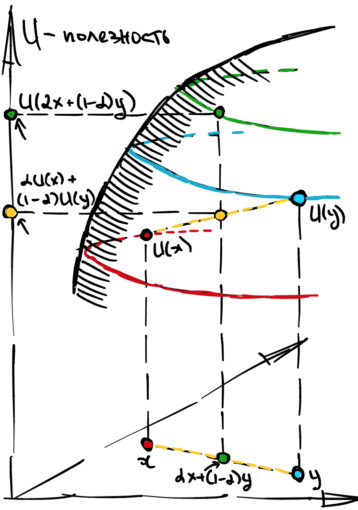

Лекция 1, часть 1¶
Зачем нужны модели¶
В прошлом вы уже сталкивались с разнообразными моделями, например, уравнение Ома \(I = U/R\) описывает связь между током и напряжением, а уравнение Ньютона \(F = m a\) описывает связь между силой и ускорением. Возможно, вы слышали, что кинетическая энергия задается уравнением
Возможно, вы не отдавали себе в этом отчет, но это всего лишь модели реальности. Понять это очень легко, потому что каждый раз в уравнении присутствует латентная переменная, которую невозможно увидеть или измерить напрямую. В уравнении Ома это ток, а в уравнении Ньютона это сила. Массу и ускорение мы можем почувствовать, но кинетическая энергия существует лишь в нашем воображении.
Похожим образом, в экономике тоже есть большое количество вымышленных объектов. Как и в физике, эти уравнения связывают что то что можно измерить с чем то, что измерить нельзя. Чего стоит одна невидимая рука рынка Адама Смита:
По-видимому, какая-то невидимая рука заставляет их принимать участие в таком же распределении предметов, необходимых для жизни, какое существовало бы, если бы земля была распределена поровну между всеми населяющими её людьми. Таким образом, без всякого преднамеренного желания и вовсе того не подозревая, богатый служит общественным интересам и умножению человеческого рода..
Первым таким вымышленным объектом в нашем курсе будет полезность. Мы скажем, что у каждого потребителя в голове зашита функция которая над каждым товаром, или действием, ставит определенное вещественное число.
Конечно же, никакой полезности на самом деле нет, как нет тока I, вектора силы F и многих других объектов. Однако, нам удобно так строить рассуждения, как будто они есть.
Что можно делать с моделями¶
Модели исключительно полезны. Все современное экономическое сообщество говорит между собой, так или иначе, на языке моделей. В зависимости от области применения модели могут быть: теоретические, эконометрические, бихевиористские. Вот лишь неполный список того, чего с ними можно делать
модели можно критиковать. К примеру, у вашей модели есть предсказание, которое не подтверждается в данных. В таком случае вы можете пуститься на поиски новой модели, либо пуститься на поиски ошибки в коде.
модели можно калибровать. Как правило, модель имеет некоторое число степеней свободы (параметров) которые можно оценить при помощи экспериментов и наблюдений.
модели можно сравнивать. Конкретно, некоторые модели являются частными случаями, или более узкими формулировками, других моделей. Если вы откалибровали узкую модель то вы всегда можете откалибровать (индуцировать) более общую модель.
модели можно аксиоматизировать. Это особенно увлекательное занятие заключается в том, чтобы сформулировать минимально необходимый набор аксиом, который фиксирует желаемую структуру.
модели можно развивать. Если набор аксиом уже известен, вы можете доказывать новые утверждения, опираясь на эти аксиомы.
Наконец, хорошо обоснованные и качественно откалиброванные модели можно использовать для того, чтобы производить экономический анализ событий прошлого, а также, строить экономические прогнозы относительно событий будущего.
Некоторые модели настолько хороши и убедительны, что не нуждаются в калибровке. Такие модели зачастую называются классическими. Наш курс, в основном, состоит в изучении именно таких моделей.
Полезность (классика)¶
Общая идея¶
Утилитарная, или модель полезности это абсолютный вакуум, в котором есть два типа сущностей: агенты и товары.
агентов можно проиндексировать: \(i \in 1,2,3\)…
товары делятся на категории: \(x, y, z\)…
Каждый агент может один раз выбрать комбинацию товаров, представленную точкой в Евклидовом пространстве \(\mathbb{R}_{+}^n\), где плюс обозначает неотрицательные числа а \(n\) это число товаров.
Например, если товаров всего три, то \(\mathbb{R}_{+}^3\) это такой (бесконечный) куб. Пусть \(a, b\) это две потенциальные комбинации, тогда у точки \(a\) будут три координаты \((a_x, a_y, a_z)\), а у точки \(b\) три координаты \((b_x, b_y, b_z)\).
Более того, не все комбинации из \(\mathbb{R}_{+}^n\) доступны. Множество комбинаций доступных для агента \(i\), как правило, обозначается заглавной буквой \(X_i\).
\(X_i\) это множество доступных альтернатив
Вообще, в первой лекции будет ровно один агент. Далее, этот агент выбирает точку в \(X_i\), которая максимизирует его полезность \(U_i(x, y, z)\).
полезность \(U_i\) это функция из \(X_i\) в \(\mathbb{R}\)
Таким образом, мы может сформулировать модель потребителя как как абстрактную оптимизационную задачу:
Подразумевается, что некоторые такие задачи вы уже должны уметь решать.
P.S. Иногда буквы алфавита \(x, y, z\) будут обозначать “разные точки в пространстве” а иногда “разные товары в полезности”, к этому придется привыкнуть. Интерпретация букв меняется, в зависимости от контекста.
Definition 1
Формально классическая (утилитарная) модель это пара: множество альтернатив \(X \subset \mathbb{R}^n_{+}\) и полезность \(U: X \to \mathbb{R}\). Никаких дополнительных аксиом не требуется.
Калибровка модели, как правило, заключается в выборе конкретной функции полезности. Предсказание модели это оптимальная комбинация товаров, в зависимости от различных предложенных \(X\).
Примеры¶
Example 1 (Яблоки и груши)
У Пети есть 100 рублей. Он может купить яблоки по цене 20 рублей за штуку либо груши по цене 50 рублей за штуку. Петя получает полезность 2 за каждое яблоко и 3 за каждую грушу, но не получает никакой полезности за оставшиеся деньги. Попробуем записать это формально:
\(X = \{(x, y) \in \mathbb{N}^2_{+}: 20 x + 50 y \leqslant 100 \}\)
\(U(x, y) = 2x + 3y\)
Example 2 (Учеба и вечеринки)
У Кати есть 24 часа в сутки, из которых она должна как минимум 8 часов поспать, a оставшиеся часы входят в полезность вида Коб-Дуглас с одинаковыми весами, то есть, учеба и вечеринки в полезности умножаются под корнем.
\(X = \{(x, y, z) \in \mathbb{N}^3_{+}: x + y + z \leqslant 24 \}\)
\(U(x, y, z) = \mathbb{I}(x \geqslant 8)\cdot y^{1/2}z^{1/2}\)
Мы поговорим о том, что такое Коб Дуглас подробнее на следующей лекции.
Example 3 (Полезность от денег)
У Саши есть 10,000,000 рублей, которые он может вложить в биткойн по курсу 1,000,000:1 или этериум по курсу 1,000,000:2. Саша ожидает, что через год рубль подешевеет на 10%, биткойн подорожает на 50% а этериум подорожает на 100%. Опишите задачу составления оптимального инвестиционного портфеля, где полезность меряется в рублях
\(X = \{(x, y, z) \in \mathbb{N}^3_{+}: x + 10^6 (y + 2 z) \leqslant 10^7 \}\)
\(U(x, y, z) = .9 x + 1.5 y + 2 z\)
Свойства полезности¶
У полезностей в \(\mathbb{R}^n\) часто бывает несколько (если не все) из нижеперечисленных свойств. Пусть \(a, b\) это какие то комбинации товаров из множества альтернатив \(X \subset \mathbb{R}^n\).
Мы начнем с двух эквивалентных определений непрерывности.
Definition 2
Полезность \(U\) непрерывна в \(X\), если для любого \(x \in X\) множества \(L_{+}(x)\) и \(L_{-}(x)\) замкнуты, где
Описанные выше множества \(L_{+}(x)\) (или \(L_{-}(x)\)) это подмножества допустимых альтернатив, которые не хуже (или не лучше) чем сам \(x\). В литературе они называются верхними (нижними) Лебеговыми множествами, см. иллюстрацию.
{kind=link}
Definition 3
Полезность \(U\) непрерывна в \(X\), если для любого \(\varepsilon > 0\) существует \(\delta >0\) такой что для любых \(x, y \in X\) верно что:
Большую роль в истории физики и математики играют выпуклые и вогнутые функции. Например, в физике твердых тел все объекты минимизирует свою энергию. Заметим, что кинетическая энергия выпуклая, то есть, энергия с минусом вогнутая функция. Следовательно, все в физике максимизирует какую то вогнутую функцию. Естественным образом, это понятие появилось и в экономике.
Definition 4
Полезность \(U\) вогнута если для любых \(x, y \in X\):
Свойство вогнутости очень сильно опиратеся на геометрическую форму полезности, см. иллюстрацию.
{kind=link}
Грубо говоря, если вы возьмете две точки на поверхности, соответствующая вогнутой полезности, то соединяющая их хорда пройдет “под” поверхностью. Другими словами, полезность в усредненной точке меньше чем усредненная полезность.
Давать определение выпуклой полезности не имеет большого смысла с экономической точки зрения, считается, что все полезности скорее вогнуты чем выпуклы. Зато большим смыслом обладает понятие квази-вогнутости. Оно опирается не на геометрическую форму полезности, как вогнутость, а на геометрическую форму Лебеговых множеств.
У квази-вогнутости, как у непрерывности, есть две версии, которые почти (но не совсем) эквивалентны друг другу.
Definition 5
Полезность \(U\) квази-вогнутa в \(X\), если для любого \(x \in X\) множество \(L_{+}(x)\) выпукло, то есть, оно содержит все свои хорды.
Чтобы обвинить функцию в не квази-вогнутости, достаточно предъявить один \(L_{+}(x)\) и продемонстрировать, что какая то хорда вылезает за его границы, см. иллюстрацию.
{kind=link}
Definition 6
Полезность \(U\) квази-вогнута в \(X\) если для любых \(x, y \in X\) их линейная комбинация не хуже чем худшая из двух:
P.S. Иногда я буду делать приставку “строго”, это значит что либо множество строго выпукло, либо неравенство строгое. Смотрите на контекст.
Вогнутость против квази вогнутости¶
Я буду иногда называть комбинацию товаров портфелем, как в финансах, вместо потребительской корзины, для краткости.
Сценарий 1¶
Чтобы попасть на работу, вам нужно сколько то ехать сначала на автобусе, а потом на метро. В портфеле 1 у вас N билетов на автобус. В портфеле 2 у вас M билетов на метро.
Логично предположить, что вы предпочтете усредненный портфель, в котором \(\frac{M+N}{2}\) билетов на автобус и \(\frac{M+N}{2}\) билетов на метро, чем получить любой из двух портфелей с вероятностью 1/2.
Это свойство означает, что ваша полезность скорее всего квази-вогнутая, но вы никак не можете проверить вогнутость без конкретной меры полезности.
Сценарий 2¶
У вас есть портфель 1 с акциями “ООО Газпром” и портфель 2 с акциями “Tesla inc.”. Средневзвешенный портфель как-то разделит инвестиции между Tesla и Газпром. Будем считать, что доходность всех трех портфелей одинаковая, но они, возможно, отличаются риском. Назначим полезность равную риску с минусом.
Вогнутость означает, что с точки зрения риска, полезность от средне-взвешенного портфеля выше чем средняя взвешенная полезность этих двух портфелей.
Квази-вогнутость означает , что с точки зрения риска, полезность от средне-взвешенного портфеля выше чем средняя взвешенная полезность этих двух портфелей, если эти два портфеля имели одинаковый риск.
То есть, квази-вогнутость более слабое условие.
Связь вогнутости и квази-вогнутости¶
Оба термина: вогнутость и квази-вогнутость, означают либо любовь агентов к разнообразию, либо комплементарность товаров, либо боязнь риска, но вогнутость однозначно сильнее чем квази-вогнутость. Докажем этот простой факт:
Property 1
Из вогнутости следует квази вогнутость
Достаточно выписать цепочку неравенств:
Однако, неверно что из квази-вогнутости обязательно следует вогнутость. Можно привести огромное количество контр-примеров.
Например функция, напоминающая перевернутую крышу пагоды:
является квази-вогнутой, но не вогнутой.
Следует отметить, что в большинстве определений, множество альтернатив \(X\) предполагается выпуклым, чтобы имело смысл говорить о взвешенных средних. Это не существенная деталь, а просто математический формализм. На всякий случай, напомним себе определение выпуклого множества.
Definition 7
Mножество \(X\) выпукло если для любых \(x, y \in X\):
То есть, выпуклое множество содержит все свои хорды, а вот вогнутых множеств вообще не бывает.
P.S. Если множество \(X\) выпукло, а функция \(U\) вогнута или квази-вогнута то такая задача называется выпуклой. Выпуклые задачи имеют упрощенный алгоритм решения, я к этому вернусь ближе к концу лекции.
Кризис классической модели¶
Тут начинается самое интересное. Дело в том, что для любого строго монотонного преобразования \(\varphi\), две полезности: \(U(x)\) и \(\varphi(U(x))\) производят идентичное поведение у потребителей.
Довольно легко генерировать примеры идентичных функций используя такие монотонные преобразования как \(\varphi(z) = z + c, cz , \log z\). Все ниже перечисленные полезности эквивалентны в этом смысле:
То есть, нет никакой возможности откалибровать полезность в пространстве функций. Это очень грустный вывод, от него веет какой то безвыходностью.
Хуже того, всеми любимое свойство вогнутости с легкостью нарушается при монотонной трансформации. Поэтому, оно совершенно не подходит для экономического анализа.
Однако, не все так плохо. Квази-вогнутость сохраняется при таких трансформациях.
Property 2
Если \(U(x)\) квази-вогнута, то \(\varphi(U(x))\) тоже квази-вогнута для любого строго монотонного преобразования \(\varphi\).
Доказательство этого факта легко выписывается, используя любое из двух определений, если знать следующие свойства:
верное для любых функций \(U\) и строго монотонных преобразований \(\varphi\).
Более того, если начать с выпуклой функции и начать ее монотонно деформировать, то мы можем гарантировать квази-вогнутость (но не вогнутость).
Property 3
Если \(U(x)\) вогнута, то \(\varphi(U(x))\) квази-вогнута для любого строго монотонного преобразования \(\varphi\).
Доказательство этого факта тривиально следует из того, что вогнутая функция уже квази-вогнута, и предыдущего утверждения. Все это дает надежду на то, что должен быть способ построить модель, инвариантную к монотонным преобразованиям.
P.S. Конечно, можно сказать что вместо конкретной полезности у агента мы рассматриваем класс эквивалентности по отношению к трансформациям \(\varphi\). Однако, это ту мач абстрактно.
Предпочтения (нео-классика)¶
Общая идея¶
Снова, в вакууме, у нас есть альтернативы и агенты. Однако, вместо полезности у каждого агента в голове зашито бинарное отношение \(\succcurlyeq\), называемое (слабым) предпочтением. Это довольно сложная штука.
Если полезность \(U\) действовала из \(X\) в \(\mathbb{R}\), то предпочтение \(\succcurlyeq\) действует из \(X^2\) в \(\{0,1\}\). То есть, для каждой упорядоченной пары альтернатив \(x, y \in X\) агент знает, (слабо )предпочитает ли он \(x\) по отношению к \(y\) или нет. Вернее, \(x \succcurlyeq y\) интерпретируется как “x не хуже чем y”.
Формально \(\succcurlyeq\) задается таблицей, например, для трех альтернатив:
Для простоты, вводятся дополнительные обозначения:
\(x \succcurlyeq y\) означает что \((x,y) \mapsto 1\) \(x \preccurlyeq y\) означает что \((y,x) \mapsto 1\) \(x \sim y\) означает что \(x \succcurlyeq y\) и \(x \preccurlyeq y\) \(x \succ y\) означает что \(x \succcurlyeq y\) но не \(x \sim y\) \(x \prec y\) означает что \(x \preccurlyeq y\) но не \(x \sim y\)
Получаются пять интуитивных отношений сильного, слабого предпочтений и безразличия. Однако, какие попало матрицы писать не стоит.
Рациональность¶
Ясно, что бинарные отношения, как они есть, это слишком абстрактно. Попробуем добавить немножко структуры.
Definition 8
Предпочтения рациональны если выполнены следующие три свойства:
для любыx альтернатив \(x, y \in X\), хотя бы \(x \succcurlyeq y\) либо \(y \succcurlyeq x\).
для любой альтернативы \(x \in X\), всегда верно что \(x \sim x\)
для любыx альтернатив \(x, y, z \in X\):
Последнее свойство - самое важное и называется транзитивностью. Рациональность накладывают структуру на то как может заполняться матрица. Попробуйте до-заполнить следующую матрицу так, чтобы предпочтения были рациональными:
Ясно, что на диагонали всегда обязаны стоять единички. Также, если где то вне диагонали стоит ноль, то на симметричной относительно диагонали позиции обязательно стоит единица.
Definition 9
Формально нео-классическая модель (для одного агента) это пара: множество альтернатив \(X \subset \mathbb{R}^n_{+}\) и предпочтения \(\succcurlyeq: X^2 \to \{0,1\}\). Предпочтения должны быть рациональные.
Непрерывность и выпуклость¶
Практически копипастой мы определяем непрерывность предпочтений.
Definition 10
Предпочтения \(\succcurlyeq\) непрерывны в \(X\), если для любого \(x \in X\) множества \(L_{+}(x)\) и \(L_{-}(x)\) замкнуты, где
И совершенно аналогично мы переносим квази-вогнутость в мир предпочтений, однако, вопреки логике, термин квази-ВОГНутости полезности превращается в ВЫПУклость предпочтений.
Definition 11
Предпочтения \(\succcurlyeq\) выпуклы в \(X\), если для любого \(x \in X\) множество \(L_{+}(x)\) выпукло, то есть, оно содержит пределы всех своих последовательностей.
Парадокс в том, что вогнутые полезности квази-вогнуты, которые, в свою очередь, ассоциированы с выпуклыми предпочтениями. А выпуклые полезности с выпуклыми предпочтениями вообще никак не связаны и даже прямо противоположны им. Это просто ужасный выбор слов и вызывает огромную путаницу. Постарайтесь запомнить что
хорошие множества выпуклы
хорошие полезности (квази) вогнуты
хорошие предпочтения выпуклы, потому что их \(L_{+}\) выпуклы
Прямая связь между полезностями и предпочтениями¶
Предположим, что у вас уже есть откалиброванная полезность. Можно ли что то сказать по поводу предпочтений? Если подумать, то окажется, что предпочтения полностью заданы следующим образом:
Definition 12
Будем говорить, что \(U\) представляет \(\succcurlyeq\), если
Это определение должно быть понятно именно на интуитивном уровне. Также должно быть понятно, что эти предпочтения будут рациональны, поскольку это просто свойства вещественных чисел:
для любыx \(U(x), U(y) \in \mathbb{R}\), либо \(U(x) \geqslant U(y)\) либо \(U(y) \leqslant U(x)\).
для любого числа \(U(x) \in \mathbb{R}\), всегда верно что \(U(x) = U(x)\)
для любыx чисел \(U(x), U(y), U(z) \in \mathbb{R}\):
Обратная связь, Теорема Дебре¶
Предположим, что у вас уже есть откалиброванные рациональные предпочтения. Можно ли восстановить по ним хотя бы одну непротиворечивую полезность?
Оказывается, что в простых случаях, действительно, можно.
Property 4
Если \(X\) конечно, то для любых рациональных предпочтений \(\succcurlyeq\) существует полезность \(U\), представляющая \(\succcurlyeq\).
Когда \(X\) конечное, то можно решить эту задачу алгоритмически. На \(i\) ом шаге алгоритма вы ищите минимальный (с точки зрения \(\succcurlyeq\)) элемент, выставляете ему полезность \(i\) и удаляете. На следующем шаге находите минимальный из оставшихся, выставляете ему полезность \(i+1\), снова удаляете, и.т.д. Если минимальных несколько, даете им одинаковую полезность.
Property 5
Если \(X\) счетно, то для любых рациональных предпочтений \(\succcurlyeq\), таких что для каждого элемента \(x \in X\) есть конечное число элементов не хуже него, существует полезность \(U\), представляющая \(\succcurlyeq\).
Доказательство аналогично предыдущему утверждению, только здесь можно сразу назначить полезность \(U(x)\) равную числу элементов не хуже \(x\), и все.
В сложных случаях нам придется потребовать непрерывность предпочтений. Это очень сложная Теорема, я не буду ее доказывать. Но на семинаре я попрошу, чтобы вам разобрали контр-пример предпочтений, которые не являются непрерывными, чтобы вы поняли существенность этого ограничения.
Theorem 1 (Дебре)
Если \(X\subset \mathbb{R}^n\) связно и сепарабельно, то для любых рациональных и непрерывных предпочтений \(\succcurlyeq\) существует непрерывная полезность \(U\), представляющая \(\succcurlyeq\).
Связность и сепарабельность это скучные технические свойства \(X\), которые все равно выполняются во всех моделях. Грубо говоря, \(X\) не может быть “фракталом” или пористой как “губка”.
Однако, не стоит забывать, что, если предпосылки теоремы не выполнены, это еще не значит что полезности нет. Она может случайно сложиться, но это скорее исключение из правила.
Разрешение кризиса классической модели¶
Напомним, что кризис утилитарного подхода заключается в не единственности полезности. Это очень болезненное свойство, сулящее постоянные проблемы, если с ним ничего не делать.
Мы продемонстрировали, что из любой полезности можно вывести рациональные предпочтения, а из любых непрерывных и рациональных предпочтений - непрерывную полезность.
Получается, что полезности и предпочтения это, по большому счету, одно и то же. Вернее, предпочтения эти и есть тот самый класс эквивалентности полезностей, который надо себе воображать.
Выбор представителя внутри класса эквивалентности - дело вкуса. Как только вы видите ту или иную полезность можно спокойно применять к ним монотонные преобразования, отключив при этом мозг. В частности, у вас может быть больше развита техника работы с полезностью \(2 \log x + 3 \log y\) чем с полезностью \(x^2 y^3.\)
Более того, удачно наложив монотонное преобразование, можно случайно сделать функцию вогнутой, хотя она была изначально всего лишь квази-вогнута.